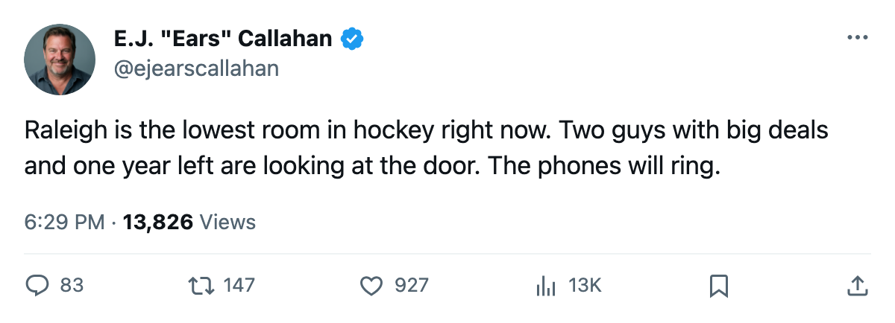
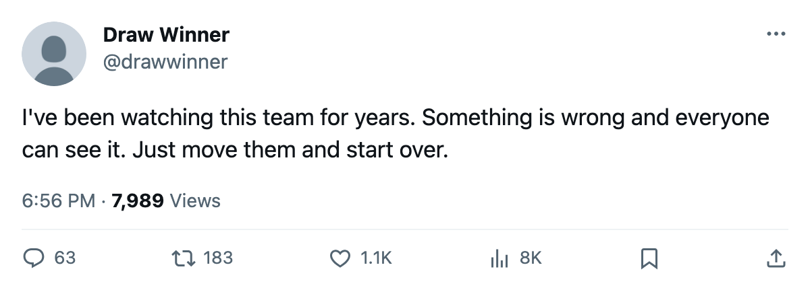

Payroll Dumps: Carolina Reads 87.1, the League Floor. Two Expiring Deals Say Sell.
Four of the league's 15 unhappiest players wear the same sweater. Two of the biggest contracts leave in July.
 E.J. "Ears" CallahanInsider · The Hot Stove
E.J. "Ears" CallahanInsider · The Hot Stove

Carolina's morale floor and $6.23M / $6.92M in expiring deals make a sell the obvious read

The piece
 Carolina Hurricanes read 87.1 on the Bureau's club morale scale, the lowest of 30 clubs.
Carolina Hurricanes read 87.1 on the Bureau's club morale scale, the lowest of 30 clubs.  Kevin Weekes84 sits at 80 morale on $6.23M with one year left.
Kevin Weekes84 sits at 80 morale on $6.23M with one year left.  Jeff O'Neill82 sits at 87 on $6.92M, also with one year left.
Jeff O'Neill82 sits at 87 on $6.92M, also with one year left.
Weekes is 30, 86 in the Book, and has started 11 games in Carolina's 4-7-2 start. O'Neill is 29, 84 in the Book, and has put up 18 points in 15 games. Neither man has years of guaranteed money left. Neither man is getting a second contract in Raleigh if the 87.1 holds through the season.
The unhappiness is not a two-man problem. Four of the league's 15 lowest-rated players on the Morale Scale wear the same sweater:  Radim Vrbata73 and
Radim Vrbata73 and  Radek Dvorak75 both at 72, Brad DeFauw70 at 72,
Radek Dvorak75 both at 72, Brad DeFauw70 at 72,  Ben Clymer69 at 74. Dvorak carries $3.20M with 2 years left at 77 overall, a salary his grade does not support. Vrbata is a 75-overall RW at $0.40M, the kind of body that moves for a late pick in any market.
Ben Clymer69 at 74. Dvorak carries $3.20M with 2 years left at 77 overall, a salary his grade does not support. Vrbata is a 75-overall RW at $0.40M, the kind of body that moves for a late pick in any market.
The Hurricanes hold 6 picks, 1 a first-rounder. An extra 4th-rounder originally belonging to  Toronto Maple Leafs sits in the vault. They are 14 points through 15 games, 3 straight losses in the streak column.
Toronto Maple Leafs sits in the vault. They are 14 points through 15 games, 3 straight losses in the streak column.  Tampa Bay Lightning has 21 through 16 in the same division.
Tampa Bay Lightning has 21 through 16 in the same division.  Steve Rucchin74 is out with an elbow, back 2005-12-19.
Steve Rucchin74 is out with an elbow, back 2005-12-19.
The building works. The roster does not.
Payroll of $63.79M against revenue of $39.99M leaves $20.78M in profit. Attendance reads 16,460 per game at $82 a seat. The business is fine. The roster at $4.56M per point is not.
Nobody has called Raleigh. League sources say the phone has not rung for Weekes or O'Neill, that GMs in other rooms are reading the same Morale Scale and seeing the same number. They are waiting to see if somebody else asks first.
The question is whether Carolina Hurricanes list, or wait to be listed.

